Թեստ 59
30:00
1. Քանի՞ երթևեկելի մասերի հատում կա այս խաչմերուկում
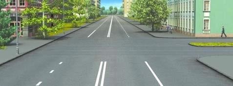
2. Քանի՞ երթևեկության գոտիներ ունի այս ճանապարհը
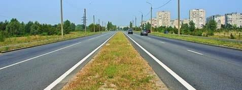
3. Ավտոբուսների շահագործումն արգելվում է, եթե՝
4. Ավտոբուսների շահագործումն արգելվում է, եթե՝
5. Եթե մտադիր եք կատարել ձախ շրջադարձ, ո՞ր տրանսպորտային միջոցին պետք է զիջեք ճանապարհը:
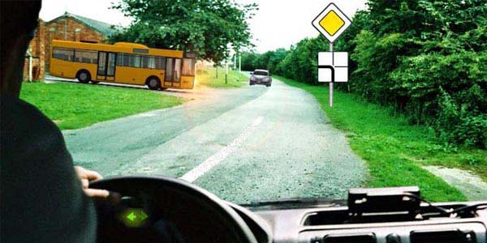
6. Ո՞ր ուղղությամբ է թույլատրվում վարորդին երթևեկել:
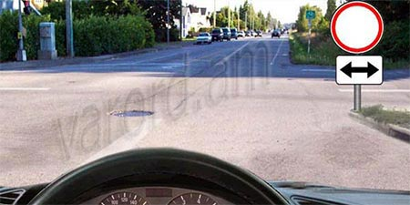
7. Տրանսպորտային միջոցները խաչմերուկը կանցնեն հետևյալ հերթականությամբ`
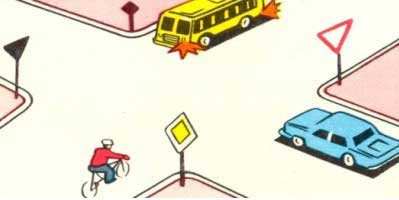
8. Թույլատրվու՞մ է արդյոք վազանցել ավտոգնացքը տվյալ իրադրությունում, եթե դրա արագությունը չի գերազանցում 30 կմ/ժ:
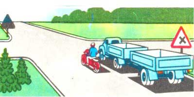
9. Այս իրավիճակում պարտավոր եք
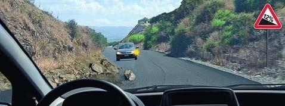
10. Վերադասավորվելով հարևան գոտի այս իրավիճակում
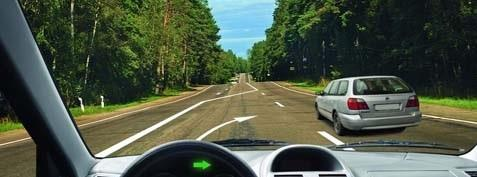
11. Այս ցուցանակի դեպքում իր հետ օգտագործված նշանի ազդեցությունը տարածվում է
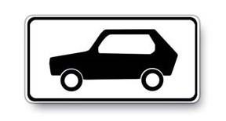
12. Երթևեկությունն արգելվում է`
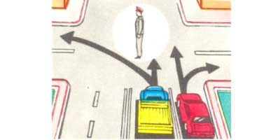
13. Որտե՞ղ է թույլատրվում երկարատև հանգստի, գիշերակացի և այլ նպատակներով կայանել բնակավայրերից դուրս:
14. Թույլատրվու՞մ է արդյոք երթևեկության ժամանակ մարդկանց գտնվելը բեռնատար ավտոմոբիլի թափքում, եթե այն կահավորված չէ մարդկանց փոխադրելու համար:
15. Ո՞ր նշանի դեպքում կանգ առնելուց հետո առանց թույլտվության շարժումը վերսկսել չի կարելի:
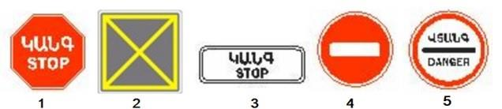
16. Զիջել պարտավոր ենք
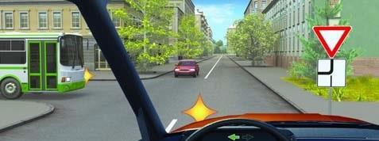
17. Թո՞ւյլատրվում է կանգառը նշված վայրում
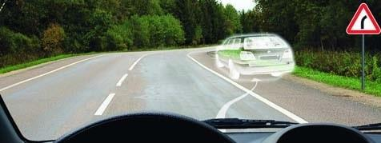
18. Այս գծանշումը նշանակում է
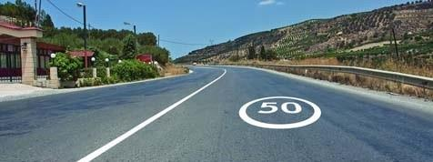
19. Զիջել պարտավոր ենք
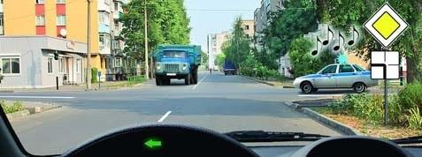